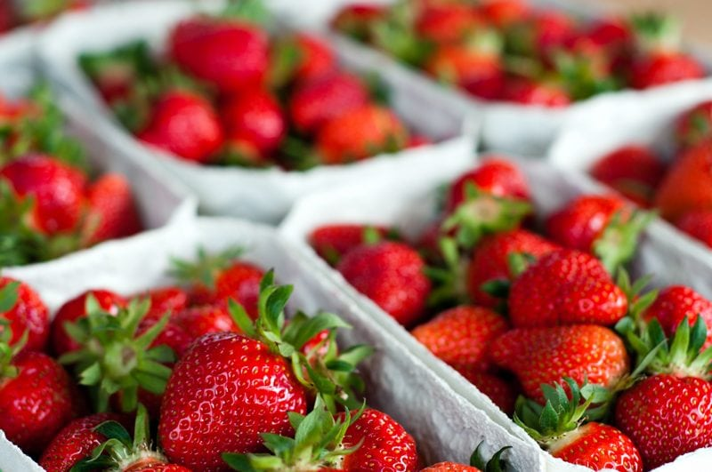
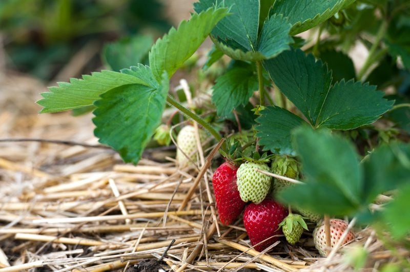

Strawberries (fresh, dehydrated, frozen)
Fresh, fragrantly sweet, summer strawberries are one of the most popular, refreshing, and healthy treats around. Not to mention that there are over 600 varieties of strawberries! I didn’t know this… I thought a strawberry was a strawberry. Ripe or not ripe. In my tummy or not in my tummy.

In addition to antioxidants, strawberries are full of vitamins and minerals such as folate, potassium, manganese, dietary fiber, and magnesium. It is also extremely high in vitamin C. Just one cup of fresh strawberries contains 160 percent of the daily recommended quantity of vitamin C, for only 50 calories. That’s pretty darn impressive.
Together, these components are responsible for the overwhelming health benefits of strawberries. So don’t be afraid to dive into that strawberry bush and come out with a full tummy.
Fresh Strawberries
Although strawberries have become increasingly available year-round, they are at the peak of their season from April through July. So come April, start watching the fruit stands if you are looking for the most delicious strawberries.
They are great eaten as is, drizzle Balsamic vinegar over them, add on top of your morning breakfast muesli, and blended into your morning smoothie.
Here’s an interesting tip: Do not remove their green caps and stems until after you have gently washed them under cold running water and patted them dry. This will prevent them from absorbing excess water, which can degrade strawberries’ texture and flavor. (source)

Dehydrated Strawberries
If you find yourself with an abundance of strawberries, you have the option of dehydrating them. Dried strawberries are wonderful served on top of cereal, as a crisp snack, or as part of a granola mix blend.
The neat thing about dried strawberries is that they keep their color when they are dehydrated and don’t require an acidic solution pre-treatment. Try my simple Sweet Strawberry Chips.
Frozen Strawberries
Freezing strawberries is another great way to preserve a taste of summer. To freeze, first gently wash and pat them dry. Arrange them in a single layer on a flat pan or cookie sheet and slide them into the freezer. Once frozen, transfer the berries to a freezer-safe plastic bag and return them to the freezer where they will keep for up to one year.
Frozen strawberries can be added to smoothies or raw ice creams. Once thawed, they will have more of a mushy texture but that’s ok, because they can blend nicely into syrups, sauces, and can be added to raw cookie and bar recipes as a natural sweetener. Fresh or frozen (thawed) they blend wonderfully into fruit leathers.
High Pesticide Warning
Strawberries are high on the Dirty Dozen list. It is suggested to purchase organic strawberries to ensure a lower risk of pesticide exposure. If strawberries are not in season or you don’t have access to organic strawberries, you can usually find organic ones in the freezer section in your local grocery store. Granted their not fresh, but I would choose organically frozen over fresh conventional ones.

- Fresh diced strawberries are wonderful on top of a green salad, over raw ice cream, or piled high on your morning breakfast cereal. Slice strawberries and add them to a bowl of cashew yogurt with a drizzle of agave nectar and sliced almonds.
- You can also blend strawberries in a food processor with a little water and use as a fresh syrup to top desserts or breakfast foods.
- Dehydrated strawberries are wonderful snacks when traveling.
- Frozen strawberries are great thrown into a blender with a banana and nut milk, for a quick and easy strawberry banana smoothie.
- Use as a natural, whole food sweetener in your recipes.
Selecting and Storing
Strawberries are very perishable, they should only be purchased a few days prior to use. Select ones that are firm, plump, and free of mold. They should have a shiny, deep red color and attached green caps. Once picked they do not ripen any further so avoid those that are dull in color or have green or yellow patches since they are likely to be sour.
Besides having the sweetest taste when ripe, they will also have more nutrients. Both underripe and overripe strawberries have been shown to have lower vitamin C content and decreased phytonutrient content in comparison to optimally ripe strawberries. So pick wisely.
Once picked, it is important not to leave strawberries at room temperature or exposed to sunlight for too long, as this will cause them to spoil. Keep them stored in the fridge.
© AmieSue.com